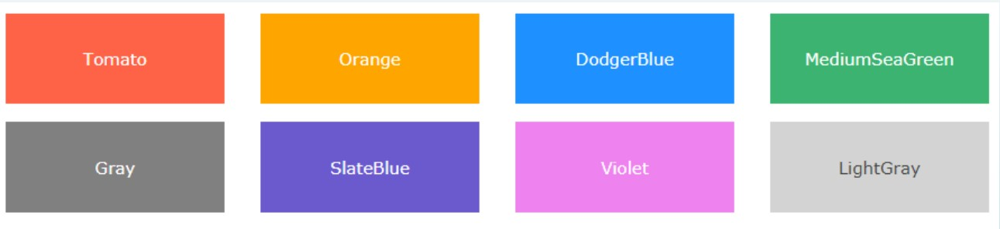
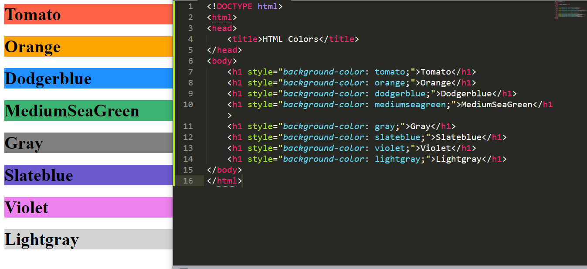

HTML colors are specified with predefined color names or with RGB, HEX, HSL, RGBA, or HSLA values.
Color Name

Background Color(BG)
To add background color in HTML, use the CSS background-color property. Set it to the color name or code you want and place it inside a style attribute.
Then add this style attribute to an HTML element, like a table, heading, div, or span tag.

Text color
Color is sometimes used to convey meaning beyond the basic text. In a course syllabus, for example, you may use color to emphasize an important statement.
The color property is used to set the color of the text. The color is specified by: ... Look at CSS Color Values for a complete list of possible color values.
Color Values

RGB
RGB color value represents Green, Red and Blue light sources.
They are represents between (0 and 255).For example, rgb(255, 0, 0) is displayed as red,
because red is set to its highest
value (255), andthe other two (green and blue) are set to 0.RGBA color values are an extension of RGB color values with an alpha channel.
An RGBA color value is specified with:
rgba(red, green, blue, alpha).
The alpha parameter is a number between0.0 (fully transparent) and 1.0
(but not transparentat all)
HTML Hex Colors
- A hexadecimal color is specified with: #RRGGBB, where the RR (red), GG (green) and BB (blue) hexadecimal integers specify the components of the color.
- In HTML, a color can be specified using a hexadecimal value in the form:
#rrggbb
where, rr (red), gg (green) and bb (blue) are hexadecimal values between 00 and ff (same as decimal 0-255).
- For example, #ff0000 – red
- #00ff00 – green
- #0000ff-blue
- #ee82ee-pink
HSL and HSLA Colors
- HSL stands for hue, saturation, and lightness.
- HSLA color values are an extension of HSL with an Alpha channel (opacity).
- In HTML, a color can be specified using hue, saturation, and lightness (HSL) in the form:
hsl(hue, saturation, lightness)
- Hue is a degree on the color wheel from 0 to 360. 0 is red, 120 is green, and 240 is blue.
- Saturation is a percentage value, 0% means a shade of gray, and 100% is the full color.
- Lightness is also a percentage value, 0% is black, and 100% is white.
HSL color
Saturation
- Saturation can be described as the intensity of a color.
- 100% is pure color, no shades of gray.
- 50% is 50% gray, but the color can be seen.
- 0% is completely gray, no longer see the color
Lightness
- The lightness of a color can be described as how much light you want to give the color, where 0% means no light (black), 50% means 50% light
(neither dark nor light) 100% means full lightness (white).
Shades of Gray
- Shades of gray are often defined by setting the hue and saturation to 0, and adjust the lightness from 0% to 100% to get darker/lighter shades:
HSLA color values
- HSLA color values are an extension of HSL color values with an Alpha channel - which specifies the opacity for a color.
- The alpha parameter is a number between 0.0 (fully transparent) and 1.0 (not transparent at all)
- An HSLA color value is specified with:
hsla(hue, saturation, lightness, alpha)